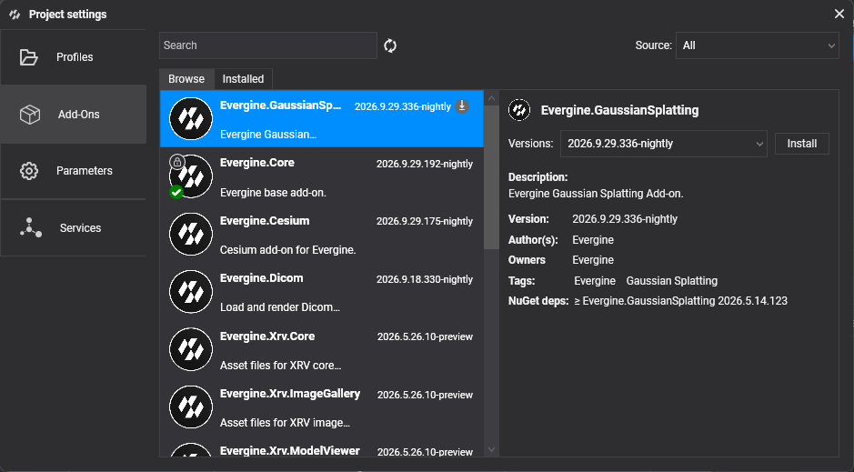

Project Settings

Project Settings groups the options that affect the whole application rather than a single scene: the platforms it targets, the add-ons it uses, how source files are imported, and the application services it registers. Open it from Settings > Project Settings. The changes are saved in the project files (.weproj and .weservices), so they are shared with everyone who works on the project.
The dialog has four tabs:
| Tab | What you configure |
|---|---|
| Profiles | The launcher projects of the application, one per platform or variant, and the texture compression and shader settings of each one. |
| Add-Ons | The add-ons installed in the project. See below. |
| Parameters | Import options that apply to every asset of the project. See below. |
| Services | The application services that Evergine registers automatically at startup, and their property values. |
Add-Ons
The Add-Ons tab lists the add-ons of the project and lets you install new ones, update them or remove them.

- Browse searches the available add-ons. Filter them by Source and by text with Search, and click Refresh to query the sources again.
- Installed lists the add-ons already in the project.
- Select an add-on to see its authors, description, tags, NuGet dependencies and versions. From there you can Install it, Update to this version, or Uninstall it.
Before applying an update, Evergine Studio shows the add-ons and NuGet packages that will change. If the update moves the project to a new engine version, it asks you to restart Evergine Studio.
Note
Core add-ons such as Evergine.Core cannot be removed or updated from this tab. They are updated together with the engine when you upgrade the project from the Evergine Launcher.
File > Manage dependencies opens this tab directly.
Parameters
The Parameters tab holds import options that apply to every asset of the project.
| Parameter | Default | Description |
|---|---|---|
| FBX Import > Skinning Max Weights | 4 | Maximum number of bone weights per vertex kept when an .fbx, .obj, .dae or .3ds model is converted. Higher values keep more detail in skinned meshes but make them heavier to render. |
| FBX Import > Sparsed Morph Targets | Disabled | Reserved for sparse morph target data. The importer does not use it yet, so morph targets are always stored dense. |